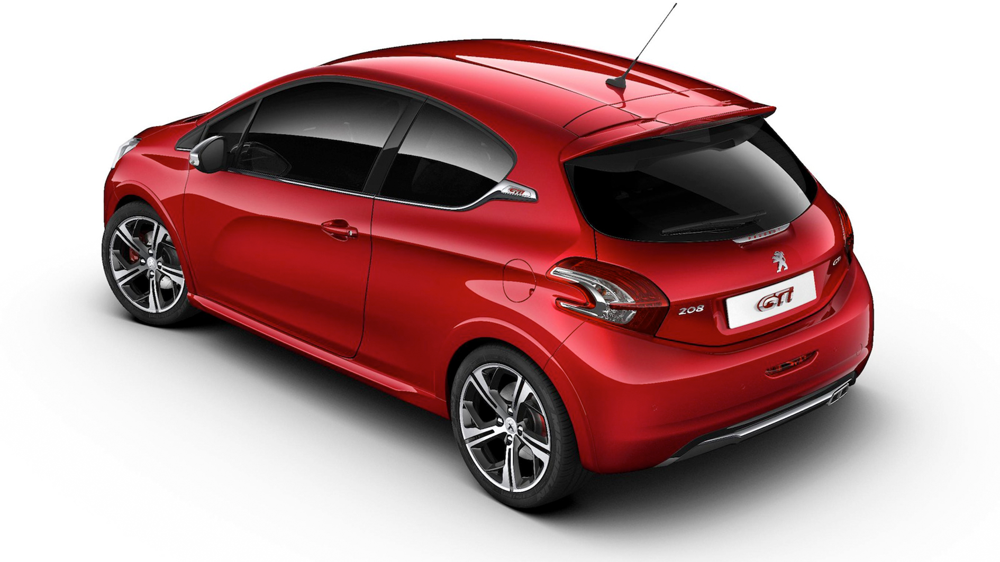
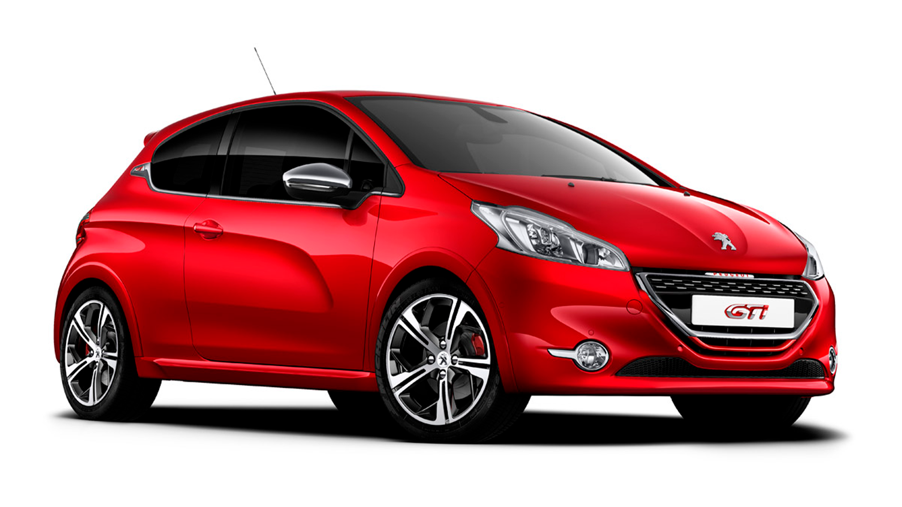
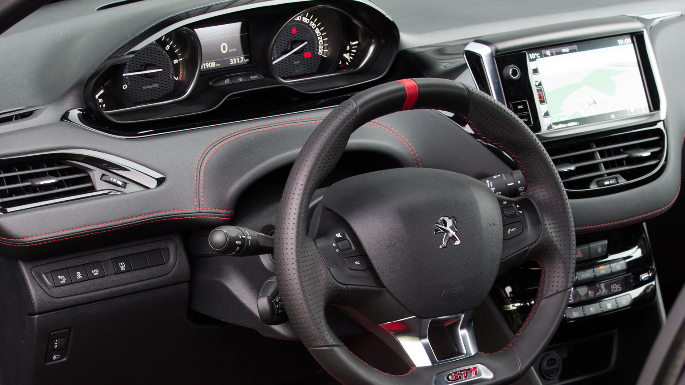
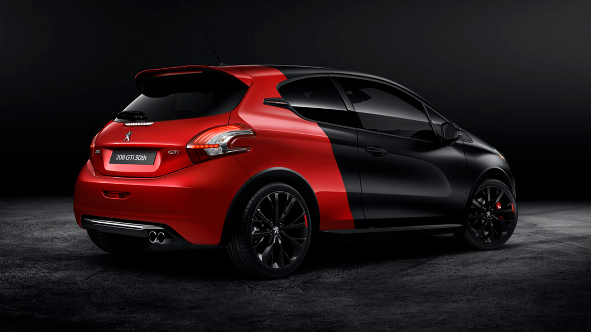
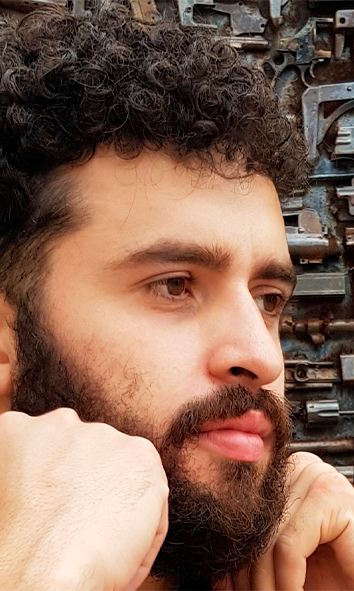
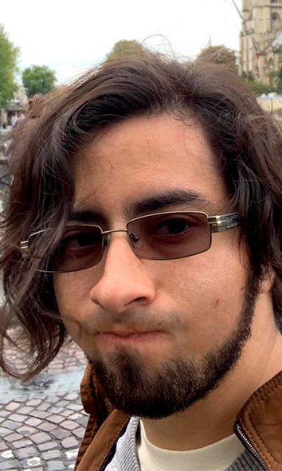

Continuando el Legado
El Peugeot 208 GTi con sus 200 caballos de fuerza un bodykit deportivo y una carrocería compacta es un digno sucesor de la leyenda de los 80s el 205 GTi, el pequeño francés se ve bien por donde lo mires pero en lo personal me encanta su silueta lateral y la parte trasera con ese gran alerón que es lo que todos verán cuando los pases a gran velocidad.
Explosivo, compacto y hermoso el 208 GTi es un clásico moderno en el mundo de los hot-hatchs.

Un rojo rubi que destaca en el horizonte.
Parrilla frontal que asemeja una bandera a cuadros.


Cuadro de instrumentos por encima del volante.
Edicion especial 30 aniversario por Peugeot Sport.
Driving Team


Piloto
- Ubaldo Muro
- 27 años
- K/D ratio 10/1
- aka FastAF
Co-Piloto
- Eddy Aguirre
- 26 años
- K/D ratio 100/1
- aka BlackAce